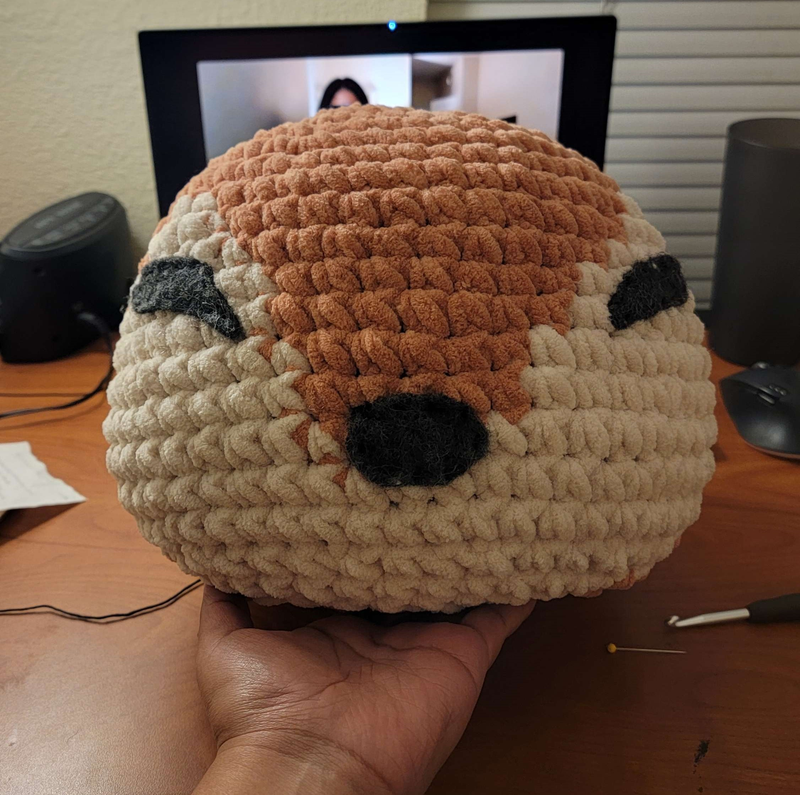

Stitching the face
Decided to pull out my embroidery threads and needles to make the face! The eyes and nose are made of wool felt.
A look into my current crochet project. I'm making a chapaa plushie from the video game Palia. Inspiration from and pattern from: https://www.etsy.com/shop/SewVixenDesigns
Decided to pull out my embroidery threads and needles to make the face! The eyes and nose are made of wool felt.
Head and ears are completely done. The body section is mostly done. Still need to attach parts together.
Head is stuffed and ears are in the making!
A start on the head of the chapaa! This is the biggest section of this project. It involves a lot of color changes.
I decided to stray away from the pattern a little bit. I'm using Demi Purl yarn by Loops & Threads in a size 6. My Chapaa plushie will be bigger than the pattern model plushie!